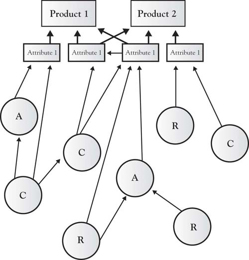

In Chapter 6 "Growth Strategy", we described growth strategies. It is now essential that we look inside the firm to determine whether the building blocks exist to actually execute the strategy. Naturally, executives look inside their organizations for the internal resources or building blocks that form the strategic bundles necessary to execute strategies to build their points of differences, or, their Area A. These building blocks are the input that managers use to create product and service attributes that meet current and future customer needs and bring the firm a competitive advantage.Hamel and Heene (1994) provide a nice description of the variety of depictions of the internal mechanisms of the firm. In this book, we have simply collectively referred to those internal building blocks as the internal resources, capabilities, and assets of the organization that may or may not be known to the customer who could only be familiar with the more visible attributes of the product or service. Rigsby and Greco described financial, physical, human, technological, and reputation resources as the major internal firm assets necessary for executing strategy (see Figure 7.1 "Firm Resources").Rigsby and Greco (2005).
Resources, capabilities, and assets are both tangible and intangible and are tied either permanently or semipermanently to the organization.Wernerfelt (1984). For example, employees in the organization provide key capabilities and competencies to the organization. Such capabilities and competencies are intangible and consist of the knowledge, skills, thought patterns, motivation, culture, and networks of the employees in the organization.Dubois (2009); Boyatzis (1982). Dubois and Rothwell argued that employee capabilities could be further classified as either technical-functional or personal functioning.Dubois and Rothwell (2000). Technical capabilities include specialized knowledge, skills, and capabilities that can be used in particular ways within the company. For example, gas metal arc welders have specialized skills because of their ability to weld aluminum at Boeing. Without this capability, Boeing would be unable to deliver fabrication attributes that its airframe customers value. Likewise, computer programmers at Microsoft and Apple have specialized capabilities necessary to produce attributes that end users value in their computer operating systems. A second category of human resource competencies is “personal” and includes management skills, strategic views, networking abilities, and psychological characteristics. Southwest Airlines has often been cited for its managerial skills that create customer relationship attributes that are valued by customers. These managerial competencies have helped build attributes in Southwest Airline’s Area A that other airlines have not been able to imitate. While technical competencies are easier to define, interpret, and apply than personal competencies, personal competencies are also very important and cannot be overlooked.Dubois (2009).
Figure 7.1 Firm Resources
Finances, plants, equipment, and physical assets are resources that are absolutely necessary for creation of attributes that are both valued and expected by customers. Physical resources also include the intellectual property and trade secrets that can be used to create and sustain an Area-A market advantage. Distinctive patents, copyrights, and other assets protect the organization’s advantage from being imitated by competitors and make an important feature of the resource bundle that sustains the distinctiveness of competencies. Physical resources are not considered firm competencies; however, they are necessary for the human competencies to create products and services that are valued by customers. An organization can have the best human capital and capabilities in the industry, but if the organization lacks the resources to execute those competencies, it cannot build its competitive advantage. Likewise, a company can have all the distinctive physical resources but lack the core competencies necessary to develop the products valued by customers for a distinctive advantage. For example, the University of Iowa built a laser-technology building with distinctive, state-of-the-art equipment; however, the university was unable to attract key scientists with the core competencies necessary to bring the university an Area A in laser research. As a result, the building was renamed the “Iowa Advanced Technology Laboratories” and now houses multidisciplinary research rather than the planned laser technology focus.Iowa Alumni Review, 45. A primary reason new ideas and ventures fail is that they lack the bridge funding and physical resources necessary to bundle with human competencies to deliver a product or service to the market. Without the distinctive physical resources to complement the human competencies (knowledge, capabilities, and skills), the organization cannot successfully produce attributes that bring the organization a sustainable advantage.
These resources, capabilities, and assets are structured to build the attributes that are viewed by customers. The sequence of activities that an organization develops to produce attributes often defines the firm, its processes, and culture. Figure 7.2 "Resources, Capabilities, and Assets Build Attributes That Differentiate Products" graphically demonstrates how resources, capabilities, and assets might work together to produce attributes, products, and services.
Figure 7.2 Resources, Capabilities, and Assets Build Attributes That Differentiate Products
How the resources, capabilities, and assets are deployed and associated is an essential characteristic of the organization. As described previously, Southwest Airlines may have human and physical resources similar to any other airline—the way they link the resources and skills to produce the customer-valued attributes is distinctive, giving them a competitive advantage. Michael Porter described how the airline’s attributes are structured in a way that brings the airline a competitive advantage based on low cost and a reputation as the fun airline (Figure 7.3 "Southwest Airlines Attribute Value Chains and Connected Activities"); however, the figure fails to demonstrate the inside view, that is, the competencies and physical resource chains that underlie the attributes.Porter (1980). For example, Southwest Airlines has mechanics whose competencies specialize in the maintenance of a single physical resource—the Boeing 737 airplane. They do not have human competencies in meal preparation or boarding-pass production and distribution and associated physical assets. Southwest has linked the human competencies and the necessary physical resources in such a way that the value chain itself—the way the resources and competencies are bundled—gives Southwest Airlines a distinctive position in the industry, that is, a very strong and sustainable Area A. It must also be noted that the competencies and resources employed by Southwest Airlines are tightly focused, and those not fitting their business model are closely examined to determine whether they can be developed in some way to grow the company or whether they should simply be eliminated to reduce costs.
Figure 7.3 Southwest Airlines Attribute Value Chains and Connected Activities

Source: Adapted from “What is Strategy?” by M. Porter, 1998, in The Strategy Reader, ed. S. Segal-Horn, pp. 73–99, Malden, MA: Blackwell.
It is critical that management understand how resource, capability, and asset competencies are bundled to create and grow Area A and sustain Area B for their organization. The DNA of any firm lies in how building blocks such as employee skills, knowledge, and capabilities—often called competencies—as well as its physical resources, assets, and networks fit together to form a unique strategic bundle.Barney (1991). Strategic bundlesAggregations of the firm’s internal attributes often invisible to the market, which have the potential of meeting current and future customer needs and values. are aggregations of the firm’s internal attributes (skills, capabilities, knowledge), often invisible to the market, which have the potential of meeting current and future customer needs and values. For a bundle to be “core” to the business it must contribute to its long-term prosperity and be a source of competitive advantage; the bundle is the DNA that makes it possible for the firm to have a viable, sustainable Area A in the 3-Circle model.
Typically, both the firm and its competition have resources that are distinctive. These are areas E and F (see Figure 7.4 "The 3-Circle Model: An Inside Look at Resource, Capabilities, and Assets Bundles"). There is also an area of overlap in which both the competitor and the firm have resources, capabilities, and assets that are common; this can be considered a point of internal similarity. Resources that form internal similarity are often the ones necessary to produce the attributes populating Area B. In commodity markets, the area of internal similarity may be very large as competitors imitate each other (restaurants) or are highly regulated to be similar (banking). This is shown in Area B of Figure 7.4 "The 3-Circle Model: An Inside Look at Resource, Capabilities, and Assets Bundles".
Figure 7.4 The 3-Circle Model: An Inside Look at Resource, Capabilities, and Assets Bundles

Building blocks (resources, capabilities, networks, knowledge, assets) in areas E and D do not fall within the customer circle and are therefore more difficult to associate directly to the firm’s current revenues stream associated with Area A or Area B.Hamel and Heene (1994). Area E and D resources, capabilities, and assets may play an indirect, noncritical role in producing the attributes currently valued by the customer, but we cannot conclude that they have no value. As shown in Chapter 6 "Growth Strategy", Area E building blocks may or may not be currently used in a strategic bundle, but they have potential for building Area A by addressing an unmet customer need found in Area G or imitating a competitor’s advantage found in Area C. Simply because internal building blocks in Area E may not currently play a direct role in creating Area A or B customer value, they still may have potential. Likewise, it was also shown in Chapter 6 "Growth Strategy" that even Area D resources, capabilities, and assets can be resurrected and can create or strengthen Areas A and B.
Adding the customer circle to Figure 7.4 "The 3-Circle Model: An Inside Look at Resource, Capabilities, and Assets Bundles" allows us to examine all of the resources underlying both the firm and the competition’s ability to produce current and future products and attributes. Figure 7.4 "The 3-Circle Model: An Inside Look at Resource, Capabilities, and Assets Bundles" is a representation of the entire 3-Circle model from the inside view. The inside view of all of the areas of the 3-Circle model pertaining to the firm can be described as follows:
Figure 7.5 Firm and Competitor Internal Perspective

Figure 7.6 Chrysler’s Retro PT Cruiser Making Areas D and A

Customer demand for the PT Cruiser had waned, and the company stopped producing the car in the early 1950s. Today’s customers would likely not value the features and attributes of the older model. To successfully reintroduce the PT Cruiser, Chrysler used resources, capabilities, and assets from areas E, A, and B to add features today’s customers desire—from scalloped headlights, a chromed front grill, brake cooling ducts, and antilock brakes, to new audio systems, including an MP3 player jack and satellite radio, a turbocharged 2.4 L four-cylinder engine, and the latest in cruise control. Simply producing a Cruiser with the features from the classic 1940s model, exclusively using Area D resources and associated features, would have failed to penetrate the customer circle. The successful integration of current Area A, B, and E resources added desirable features to the PT Cruiser that led to the growth of Chrysler’s Area A and the car’s being recognized as Motor Trend’s car of the year in 2001.
Growing Area B by using Area D resources may be necessary to meet the new minimum market standards; however, because customers will expect the attributes of all companies in the market, demands for quality will be high and there will be downward price pressure. While it is necessary to maintain Area B market attributes, investing heavily in Area B may simply increase customer expectations and organizational costs without building profits. Thus, the profit-margin potential will be low. Thus, resources, capabilities, and assets found in Area D must be assessed with care.
The natural inclination is to eliminate resources, capabilities, and assets located in Area D because they burn valuable resources, have little discernable connection to the revenue-generating attributes of the firm, and, as a result, may be a fatal distraction to the central mission and vision of the company. Yet to remove those resources may give competitors an advantage because the firm can no longer pose the threat of retaliation through imitation. Firms retain these Area D resources because if they do not, competitors who also have them can build a competitive advantage unchallenged.Stiglitz and Mathewson (1986). Still, as described here, unless the resources in Area D are transformed or bundled with other organizational resources, capabilities, and assets they have very little chance of building a meaningful advantage in a way that cannot be imitated by the competitor.